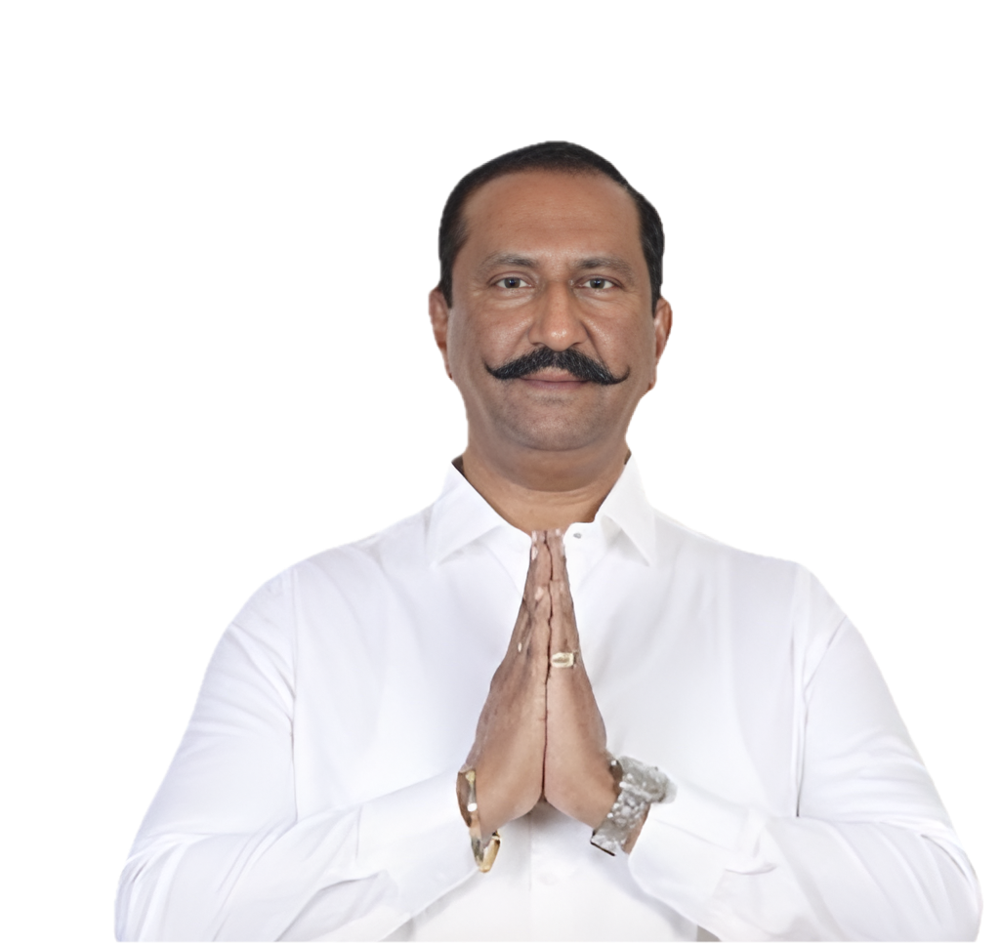
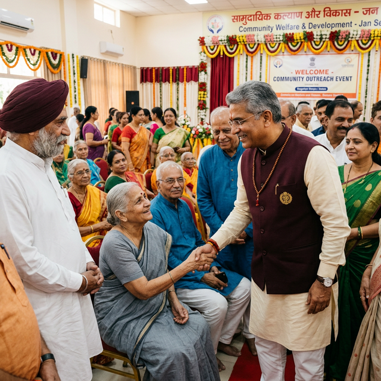
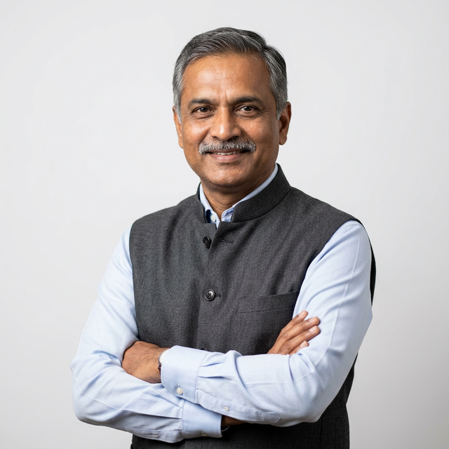

"Transforming Governance with Integrity and Innovation"

A distinguished officer from the 1987 batch of the Indian Administrative Service, Anil Kumar has dedicated over three decades to transformative governance across Karnataka and at the national level.
With a strong academic background in Nuclear Physics, he brought analytical precision, structured problem-solving, and innovation into public administration.
Throughout his career, he has handled diverse and challenging assignments spanning infrastructure development, social justice, industrial reform, urban governance, and national policy design. His ability to combine strategic vision with meticulous execution has resulted in measurable and sustainable outcomes.
Known for his integrity, decisiveness, and people-centric approach, he has consistently emphasized inclusive development, institutional strengthening, and transparent governance. His leadership reflects a deep commitment to public service, long-term planning, and systemic reform, earning him recognition as one of the most respected and impactful administrators in the state.
Spanning decades of transformative governance across multiple domains — each driven by a commitment to measurable, lasting change.
Spearheaded transformative infrastructure projects including KSHIP, modernizing highway development frameworks and enhancing regional connectivity across Karnataka.
Championed policies ensuring equity, dignity, and empowerment for marginalized communities through targeted interventions and policy-driven reforms.
Championed digital systems integration for transparency and accountability, including end-to-end digitization and real-time monitoring systems.
Led transformation of public sector enterprises through strategic restructuring, modernization, and disciplined financial management to restore growth.
As Joint Secretary MSME, operationalized PMEGP, SFURTI, and ASPIRE schemes, establishing Livelihood & Technology Business Incubators nationwide.
Led efforts to revive the historic Pythian Games after 1600+ years, promoting "Unifying Nations through Arts & Culture" globally.
With a visionary approach to development, Anil Kumar played a transformative role in strengthening large-scale infrastructure systems that drive economic growth and regional connectivity.
By securing international funding support and introducing innovative project models, he modernized highway development frameworks and enhanced institutional capacity. His emphasis on transparent procurement, quality monitoring, and structured implementation established new benchmarks in public works.
Under his leadership as Chief Project Officer, the Karnataka State Highways Improvement Project (KSHIP) achieved the prestigious India-Tech Excellence Award (2010), presented by the President of India.

Committed to equity and inclusive development, Anil Kumar has consistently worked to uplift marginalized and underserved communities through targeted interventions and policy-driven reforms.
His approach to governance emphasizes equal access to opportunities, transparent systems, and citizen-centric implementation mechanisms that ensure benefits reach the last mile.
Throughout his career, he has focused on strengthening institutional accountability, protecting the rights of vulnerable sections, and creating pathways for social mobility. He has advocated for dignity, representation, and economic empowerment across diverse social groups.
"True progress is not measured solely by economic growth, but by how effectively development bridges inequality and expands opportunity for every citizen."
Provided decisive leadership during a critical public health emergency, ensuring coordinated response, institutional stability, and public safety through strategic planning and swift administrative action.
Bengaluru's COVID-19 response model earned international recognition when the World Economic Forum acknowledged the Bruhat Bengaluru Mahanagara Palike (BBMP) COVID-19 War Room for its innovative use of technology and data-driven governance.
The recognition came as part of the Forum's Technology and Data Governance in Cities report, highlighting how city authorities used digital dashboards and integrated command systems to monitor the virus spread, coordinate volunteer networks, and support frontline services.
After an illustrious administrative career, Anil Kumar entered active public life in 2022, continuing his commitment to service through democratic engagement. His transition into politics reflects a desire to directly contribute to grassroots development, policy advocacy, and constituency empowerment.
Engaging directly with citizens across towns and cities, Anil Kumar believes leadership begins with listening. Through large public gatherings and grassroots outreach, he connects with communities to understand their aspirations and concerns.
His approach emphasizes accessibility, accountability, and people-centered governance, strengthening trust between leadership and society.
Anil Kumar's academic journey laid a strong intellectual foundation for his distinguished career in public service.
Central College, Bangalore University
MES College of Arts, Science & Commerce, Bengaluru
His Nuclear Physics background instilled precision, logical reasoning, and problem-solving discipline — qualities that later defined his administrative effectiveness.
B. H. Anil Kumar hails from a distinguished family rooted in Tumakuru District, Karnataka, with a long-standing legacy of public service and community leadership.
His father, the late Shri B. H. Hanumantha Raju, IAS, served with distinction, while his mother, Smt. L. Sharadamma, contributed significantly to the education sector as Director in the SSLC Board and later as a Member of the Karnataka Public Service Commission.
His paternal grandfather, Shri Hanumaiah, was a respected teacher, and his maternal grandfather, Shri L. Lingiah, served in the administration of the Maharaja of Mysore.
He is married to Smt. G. Geetha, a homemaker and entrepreneur. The couple is blessed with two sons — Harsh Anil Kumar (married to Smt. N. Nalina, two sons) and Arjuna Anil Kumar (married to Dr. C. Chandana, one daughter).
Moments from a distinguished career in public service and leadership

Whether you have a question, want to share your thoughts, or wish to collaborate on initiatives — your voice matters.
bhak62@gmail.com
+91 8527607799
Flat No. 301, Casa Crescent, 16/9 Binny Crescent Road, Benson Town, Bengaluru – 560046
Sy No. 41/10, "Panchajanya", Beside SBI Bank, Madhugiri Road, Koratagere Town, Tumakuru District – 572138